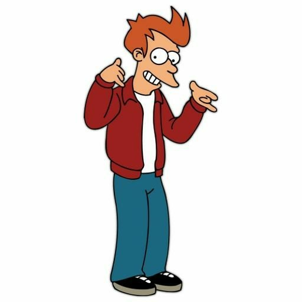

This is Philip J. Fry

Fry is the protagonist of the series. After he was frozen in chryosleep for 1000 years, Fry wakes up in the
31st century. After meeting his elderly distant nephew Profesor Farnsworth he is hired onto the planet express
crew. Along with Bender, Leela and the other planet express members he embarks on countless wild and hilarious adventures.